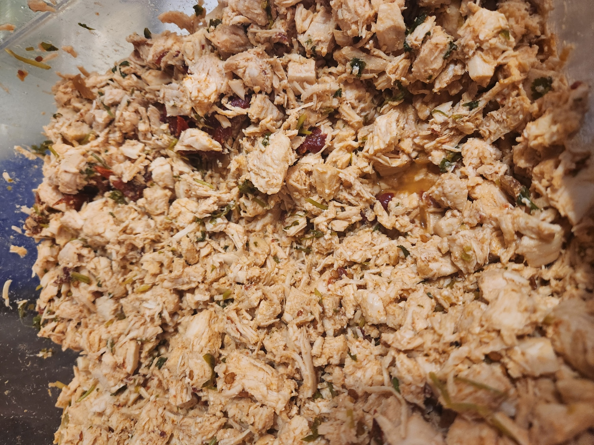

Tequilla Lime Chipotle Chicken

This juicy and spicy chicken goes amazing on salads, sandwhiches, tacos, and quesadillas!
Ingredients
- 1 80oz Bag of Frozen Chicken
- 1 Bunch of Cilantro
- 6 dried Guajillo Chilies
- 1 Table Spoon of Cumin
- 1 Table Spoon Granulated Garlic
- 1 Table Spoon Salt
- 3/4 Cup Lime Juice
- 1/2 Cups Tequilla
- 3/4 Cups Cooking Liquid
- 1/2 a 7oz can of Chipotle Peppers in Adobo Sauce
Equipment
- One 5 Gallon Stock Pot
- One Chef Knife
- One Cutting Board
- One 4 Quart Mixing Bowl
Instructions
- Chop the bunch of cilantro where the leaves becoming mostly stems.
- Add cilantro stems, chilies, and frozen chicken into the stock pot and cover with water.
- Bring the pot of chicken to a boil and cook until chicken is cooked through, about an hour.
- While Chicken is cooking chop the cilantro leaves and the chipotle peppers.
- Add cilantro, cumin, granulated garlic, salt, lime juice, tequilla, and chipotle peppers in mixing bowl and mix together.
- Once chicken is cooked, add 3/4 cup of the cooking liquid to the mixing bowl.
- Then remove the chicken from the cooking liquid and dice into bite size pieces. (be caureful, the chicken will be HOT!)
- Once chicken is cut add it to the mixing bowl and mix all ingredients together.
- You're all done! Now throw some in a tortilla or whatever.